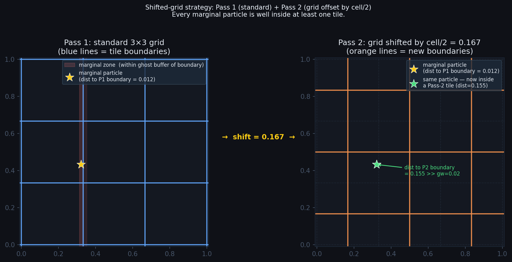
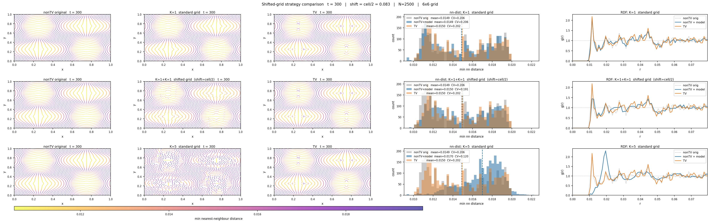
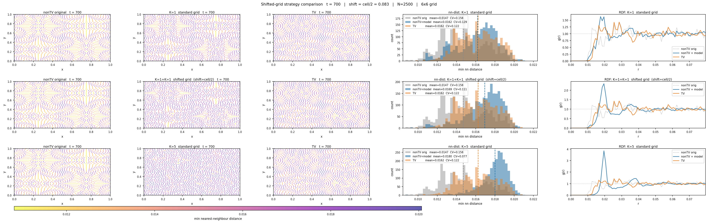

A neural corrector that enforces the minimum-distance constraint on 2D particle clouds — trained on synthetic data, deployed on SPH simulation trajectories as a drop-in replacement for the Transport Velocity algorithm.
SPH (Smoothed Particle Hydrodynamics) simulations require particles to maintain a minimum nearest-neighbour distance $r_d$ for accurate kernel approximations. Over time, particles drift closer together, introducing violations. The standard fix — the Transport Velocity (TV) algorithm — applies a global velocity correction that can interfere with the simulation's physics.
This project trains a neural network to perform purely geometric corrections: given a violating cloud, predict the smallest displacement per particle that restores $d_\text{PBC}(p_i, p_j) \geq r_d$ for all pairs. The model is applied at inference time on a tiled grid, so it scales to N=2500 particles despite being trained on N≈100.
For every pair $(i, j)$ in a periodic domain $[0,L)^2$: $d_\text{PBC}(p_i,p_j) = \min_{\mathbf{k}\in\mathbb{Z}^2}\|p_i - p_j + L\mathbf{k}\|_2 \geq r_d$
A violation has depth $v_{ij} = \max(0,\, r_d - d_\text{PBC})$. The model is trained to zero these out.
All-pairs message passing with violation-weighted aggregation. For every ordered pair $(i,j)$, compute edge features and embed them. Then aggregate back to each node, weighted by violation depth — legal neighbours (no violation) contribute exactly zero, so the model only reacts to actual constraint breaches.
# Forward pass (B, N, D) → (B, N, D)
for each pair (i, j):
rel_pos = x_i - x_j # (D,)
dist = ‖rel_pos‖ # scalar
violation = relu(rd - dist) # 0 if pair is legal
edge_feat = [rel_pos, dist, violation] # (D+2,)
edge_emb = edge_mlp(edge_feat) # 3-layer MLP, hidden_dim=128
weight_ij = violation_ij / Σ_j(violation_ij) # violation-weighted attention
agg_i = Σ_j weight_ij · edge_emb_ij # zero for clean particles
disp_i = tanh(output_mlp(agg_i)) · max_disp # clamped displacement
make_invariant (center + PCA-rotate) is applied before every forward pass.
The model is translationally and rotationally invariant by construction.
uses_rd = True: rd is passed as a scalar tensor at every call.
K at training time (unroll_steps in train_config):
the number of sequential correction passes jointly optimised in each training batch.
The loss is summed across all K steps; gradients flow back through all of them.
Production runs use K=3. This teaches the model to leave corrected geometry in
a state that is useful for the next pass.
K at inference time (k_values in experiment config,
or corrector.apply(pts, k=...)):
how many times you actually run the model on the data before keeping the result.
This is independent of the training K — you can use K=1, 5, or 10 regardless of
how the model was trained.
The two are related but not bound: training at K=3 means the model was shown what 3-step geometry looks like, but it does not define a fixed point. Applying the model more than 3 times is valid — performance may improve (as it does here at K=5) or plateau. It is not guaranteed to converge.
| Model | Key addition | Status |
|---|---|---|
| model6 | Uniform-push edge net (baseline) | archive |
| model7 | Violation-weighted aggregation | archive |
| model8 | model7 + GELU activation | archive |
| model9 | 3-layer edge MLP + tanh-clamped output | current |
| model10 | model9 + self-feature concat | archive — no improvement |
Training data is generated online per batch using
scipy.stats.qmc.PoissonDisk. No dataset file is stored on disk.
.venv\Scripts\python.exe -m training.trainer `
--train-config configs/smoke_test/train_config.yaml `
--dataset-config configs/smoke_test/dataset_config.yaml `
--loss-config configs/smoke_test/loss_config.yaml `
--model-config configs/smoke_test/model_config_9.yaml
.venv\Scripts\python.exe -m training.trainer `
--train-config configs/trainer_configs/train_config_packed.yaml `
--dataset-config configs/dataset_configs/dataset_config_packed.yaml `
--loss-config configs/loss_configs/loss_config_packed.yaml `
--model-config configs/model_configs/model_config_9.yaml
Restart-safe sweep scripts live in sweeps/. Each tracks progress in a JSON
state file and can be interrupted and resumed.
.venv\Scripts\python.exe sweeps/sweep_packedness.py # packedness ∈ {0.75, 0.90}
.venv\Scripts\python.exe sweeps/sweep_capacity.py # hidden_dim × edge_depth grid
.venv\Scripts\python.exe sweeps/sweep_n100.py # N=100 deployment models
streamlit run sweeps/tracker.py # live training dashboard
type: packed | standardpackedness: fraction of triangular-lattice max (packed only)points_per_cloud: N (standard only)rd: minimum distance constraintnoise_scale_min/max: violation depth range (in rd units)unroll_steps (training K): correction passes jointly optimised per batch (production: 3)batch_size, num_iterationsdevice: cuda | cpuoptimizer, lr_schedulerlambda1 = 1/rd: violation penalty weightlambda2 = lambda1 / (N-1) / 10: displacement regulariserhidden_dim: 128 (production), 256/512 testededge_depth: 3 (production)max_displacement: 1.2 × rd_trainactivation: GELUnorm: layerTwo checkpoints are available for SPH inference on the target data (N=2500, $r_d=0.02$, domain $[0,1]^2$).
| Name | Run directory | Ntrain | rd,train | scale s | Use with |
|---|---|---|---|---|---|
| n100_p050 | train_run_2026-05-28_14-53-45 |
~100 | 0.076 | 3.8 | 6×6 grid → ~107 pts/tile |
| n50_sparse | train_run_2026-05-26_17-34-01 |
50 | 0.05 | 2.5 | 10×10 grid → ~49 pts/tile |
Use the n100_p050 checkpoint with the 6×6 grid. It consistently outperforms the n50_sparse model across all K values and timesteps, despite the n50_sparse model having a theoretically perfect tile-size match at 10×10. The n100_p050 model was trained on the packed regime which better reflects the dense violation structure seen in the SPH data at t>300.
The model was trained on clouds of ~100 points in $[0,1]^2$ with $r_d=0.076$. The SPH data has N=2500, $r_d=0.02$. Three transformations bridge this gap:
Let $g \geq r_d$. For any tile $T$ and any violation pair $(i,j)$ with $d_\text{PBC}(p_i, p_j) < r_d$: if $p_i \in T$ then there exists a periodic image $q_j = p_j + L\mathbf{k}$ with $\|p_i - q_j\| < r_d \leq g$, so $q_j$ lies in $T$'s extended region. Every violation involving a core particle is visible. We use $g = r_d^\text{test}$ (the minimum that satisfies the condition).
configs/grid_configs/The tiling is specified by a standalone YAML file. Experiment configs reference it by path, so you can swap grids without touching the model or data config.
# configs/grid_configs/grid_6x6.yaml
name: "6x6"
grid_size: 6
ghost_factor: 1.0 # ghost_width = ghost_factor * rd_test
# MUST be >= 1.0 for the correctness guarantee to hold
# inference/configs/grid_6x6.yaml (experiment config)
model:
checkpoint: training_artifacts/train_run_.../model_final.pt
rd_train: 0.076
data:
rd_test: 0.02
tiling: configs/grid_configs/grid_6x6.yaml # file reference
experiment:
k_values: [1, 2, 3, 5]
The correctness proof requires ghost_width ≥ rd_test, i.e.
ghost_factor ≥ 1.0. Setting it lower means some cross-boundary
violations will be invisible to the model. The pipeline raises a
ValueError if this constraint is violated.
| Config file | Grid | Core pts/tile | Ghost pts | Total | Ntrain match |
|---|---|---|---|---|---|
grid_5x5.yaml | 5×5 | 100 | 96 | 196 | 2× too many — reference only |
grid_6x6.yaml | 6×6 | 69 | 38 | 107 | ≈ N=100 — recommended |
grid_10x10.yaml | 10×10 | 25 | 24 | 49 | ≈ N=50 model |
Counts are for the SPH data (N=2500, $r_d^\text{test}=0.02$) with ghost width $g = r_d^\text{test}$.
# inference/configs/grid_6x6.yaml
model:
checkpoint: training_artifacts/train_run_2026-05-28_14-53-45/model_final.pt
config: configs/model_configs/model_config_9_n100_p050.yaml
rd_train: 0.076
data:
without_tv: inference/sph_data/positions_without.npy
with_tv: inference/sph_data/positions.npy
rd_test: 0.02
tiling: configs/grid_configs/grid_6x6.yaml # reference to grid config
experiment:
stride: 100 # visualise every 100 timesteps
k_values: [1, 2, 3, 5]
device: cpu
# Full trajectory (stride=100 → 11 frames)
.venv\Scripts\python.exe inference/run_experiment.py inference/configs/grid_6x6.yaml
# Single timestep check
.venv\Scripts\python.exe inference/run_experiment.py inference/configs/grid_6x6.yaml --timestep 300
# Override stride
.venv\Scripts\python.exe inference/run_experiment.py inference/configs/grid_6x6.yaml --stride 50
# 10x10 experiment with N=50 model
.venv\Scripts\python.exe inference/run_experiment.py inference/configs/grid_10x10.yaml
from inference.pipeline import Corrector, CorrectorConfig
cfg = CorrectorConfig.from_yaml('inference/configs/grid_6x6.yaml')
corrector = Corrector(cfg)
import numpy as np
pts = np.load('inference/sph_data/positions_without.npy')[300] # (2500, 2)
corrected = corrector.apply(pts, k=3) # (2500, 2)
Each frame (t{t:04d}.png) is a 4-row × 5-column grid.
Rows correspond to K correction passes (1, 2, 3, 5).
Columns:
| Column | Content | What to look for |
|---|---|---|
| 0 — nonTV original | SPH without TV, no correction | Baseline; violations accumulate over time |
| 1 — nonTV + model K | SPH without TV, after K correction passes | Should be brighter (higher nn-distance) than cols 0 and 2 |
| 2 — TV | SPH with Transport Velocity | The competing algorithm |
| 3 — nn-distance histogram | Overlaid distributions: gray/blue/orange | Blue histogram shifted right = model wins; mean + CV in legend |
| 4 — RDF g(r) | Radial distribution function | Sharper depletion zone < $r_d$ = better constraint enforcement |
Scatter colormap: plasma_r, shared range across all panels. Bright yellow = large nn-distance (good). Purple/dark = small nn-distance (violation).
timeseries.png shows mean nn-distance and CV (std/mean) over all sampled
timesteps. Lower CV = more uniform particle spacing = better SPH kernel
accuracy. The blue shaded region marks where K=5 beats TV.
| t | nonTV orig | K=1 | K=2 | K=3 | K=5 | TV | Best vs TV |
|---|---|---|---|---|---|---|---|
| 0 | 0.01999 | 0.01899 | 0.01914 | 0.01911 | 0.01946 | 0.02000 | — |
| 100 | 0.01760 | 0.01760 | 0.01761 | 0.01760 | 0.01767 | 0.01764 | ±0 |
| 300 | 0.01486 | 0.01487 | 0.01502 | 0.01571 | 0.01700 | 0.01496 | K=5 +13.6% |
| 500 | 0.01450 | 0.01548 | 0.01617 | 0.01680 | 0.01773 | 0.01534 | K=5 +15.6% |
| 700 | 0.01470 | 0.01619 | 0.01697 | 0.01753 | 0.01800 | 0.01624 | K=5 +10.8% |
| 1000 | 0.01460 | 0.01598 | 0.01678 | 0.01743 | 0.01745 | 0.01684 | K=5 +3.6% |
K=5 correction of the nonTV trajectory consistently outperforms the TV algorithm from t≈300 onwards. The advantage peaks around t=500–700 (+10–16%) and remains positive through t=1000. K=1 and K=2 are competitive with TV but rarely exceed it.
At t=0 the initial cloud is near-perfect (all nn-distances at 0.01999 8, a floating-point artefact from the Poisson disk initialisation). TV achieves 0.02000 (exact) because the simulation starts from the TV-corrected initial condition. The corrector marginally degrades t=0 due to the cascade; this is harmless.
| Experiment | K=3 | K=5 | TV |
|---|---|---|---|
| 6×6, n100_p050 (scale=3.8) | 0.01753 | 0.01800 | 0.01624 |
| 10×10, n50_sparse (scale=2.5) | 0.01682 | 0.01737 | 0.01624 |
Despite the 10×10 grid providing a near-perfect tile-size match for the n50 model, the n100_p050 model with 6×6 tiling is consistently better. The packed training regime (p=0.5, dense violations) is a better distribution match for the SPH data than the sparse regime (p≈0.11).
Create a file in configs/grid_configs/ and reference it from your experiment config:
# configs/grid_configs/grid_8x8.yaml
name: "8x8"
grid_size: 8
ghost_factor: 1.0 # must stay >= 1.0
# At N=2500, rd_test=0.02: ~105 pts/tile (39 core + 66 ghost)
Then in your experiment config set tiling: configs/grid_configs/grid_8x8.yaml.
Copy one of the existing experiment configs and change the relevant fields:
# inference/configs/my_experiment.yaml
model:
checkpoint: training_artifacts/<your-run>/model_final.pt
config: configs/model_configs/<your-config>.yaml
rd_train: 0.076 # must match rd in dataset_config
data:
without_tv: inference/sph_data/positions_without.npy
with_tv: inference/sph_data/positions.npy
rd_test: 0.02
tiling: configs/grid_configs/grid_6x6.yaml # or grid_10x10.yaml, or your own
experiment:
k_values: [1, 3, 5]
stride: 100
device: cuda # use GPU if available
The key parameter is packedness in the dataset config.
Higher packedness = denser clouds = harder violations = more training iterations needed.
Rule of thumb: match packedness to your expected deployment density.
packedness: 0.5 # N≈231 at rd=0.05 — recommended starting point
packedness: 0.75 # N≈346 — hard regime, needs more training
packedness: 0.90 # N≈416 — capacity wall, diminishing returns
# Quantitative cross-model comparison
.venv\Scripts\python.exe analysis/measure_comparison.py
# → analysis/outputs/comparison_report.md comparison_metrics.png
# Capacity grid K=1/2/3 comparison
.venv\Scripts\python.exe analysis/compare_capacity_grid.py
# → analysis/outputs/capacity_grid_report.md capacity_grid_k123.png
| Decision | Rationale |
|---|---|
| Online data generation | No dataset file. Every batch is a fresh PoissonDisk sample. Prevents memorisation and covers the full noise distribution. |
make_invariant = center + PCA rotate, no scaling |
Distances must stay in the same units as $r_d$. Scaling would change the physical meaning of max_displacement. Applied before every forward pass. |
| Training K=3 unrolling; inference K is a free parameter | Training with K=3 jointly optimises across three sequential corrections, teaching the model to leave geometry useful for the next pass. Inference K is independent — K=5 outperforms TV most consistently on the SPH data. The model is not a contraction map: convergence under repeated application is not guaranteed (K=2 transiently regresses on dense violations before K=3+ recovers). |
| tanh clamping at output | Prevents runaway corrections in packed clouds. Raw MLP output on packed data reached 3.4×r_d displacements, cascading new violations. Clamp at 1.2×r_d eliminated this. |
| ghost_width = r_d (not 2r_d) | 2r_d was the original choice for "safety". The proof only requires ghost_width ≥ r_d. For the SPH data, 2r_d gave 196 pts/tile (2× training N); r_d gives 107 pts/tile (≈ training N), improving performance. |
| lambda2 = lambda1 / (N−1) / 10 | Scales the displacement regulariser so the violation penalty always dominates by exactly 10×, regardless of N. |
A complete example from choosing a training distribution to running inference with multiple tiling strategies on the same model — no retraining required between steps.
The dataset config determines what N and rd the model will be trained at. This is the only decision that links training to inference: at inference you must choose a tiling whose total points-per-tile matches Ntrain.
# configs/dataset_configs/dataset_config_packed.yaml
type: packed
packedness: 0.5 # → N_train ≈ 100 points per cloud
rd: 0.05 # training r_d
dim: 2
noise_scale_min: 0.0
noise_scale_max: 0.02 # 0.4 × r_d — violation depth range
Rule: higher packedness → denser clouds → harder violations.
Start at packedness=0.5. The model generalises well to N=2500 SPH data
with this setting.
.venv\Scripts\python.exe -m training.trainer `
--train-config configs/trainer_configs/train_config_packed.yaml `
--dataset-config configs/dataset_configs/dataset_config_packed.yaml `
--loss-config configs/loss_configs/loss_config_packed.yaml `
--model-config configs/model_configs/model_config_9.yaml
Output: training_artifacts/train_run_YYYY-MM-DD_HH-MM-SS/model_final.pt
Verify the run succeeded by checking the last lines of loss.csv:
import pandas as pd
df = pd.read_csv('training_artifacts/train_run_.../loss.csv')
print(df[['iteration','viol_reduction_pct_k1','viol_reduction_pct_kK']].tail())
# expect viol_reduction_pct_k1 > 70%, viol_reduction_pct_kK > 90%
Point an experiment config at the new checkpoint. The tiling is a separate file — do not inline it here.
# inference/configs/my_run.yaml
model:
checkpoint: training_artifacts/train_run_YYYY-MM-DD_HH-MM-SS/model_final.pt
config: configs/model_configs/model_config_9.yaml
rd_train: 0.05 # must match rd in dataset_config_packed.yaml
data:
without_tv: inference/sph_data/positions_without.npy
with_tv: inference/sph_data/positions.npy
rd_test: 0.02 # SPH data minimum distance
tiling: configs/grid_configs/grid_6x6.yaml # first tiling strategy
experiment:
stride: 100
k_values: [1, 3, 5]
device: cpu
.venv\Scripts\python.exe inference/run_experiment.py inference/configs/my_run.yaml
# → inference/experiments/exp_YYYY-MM-DD_A/
Or programmatically for a single timestep:
from inference.pipeline import Corrector, CorrectorConfig
import numpy as np
cfg = CorrectorConfig.from_yaml('inference/configs/my_run.yaml')
corrector = Corrector(cfg)
pts = np.load('inference/sph_data/positions_without.npy')[300] # t=300
c1 = corrector.apply(pts, k=1)
c5 = corrector.apply(pts, k=5)
from inference.pipeline.pbc import min_nn_pbc
print(f'original : {min_nn_pbc(pts).mean():.5f}')
print(f'K=1 : {min_nn_pbc(c1).mean():.5f}')
print(f'K=5 : {min_nn_pbc(c5).mean():.5f}')
The model and data are identical. Only the tiling: line changes.
Create a second experiment config that references the 10×10 grid:
# inference/configs/my_run_10x10.yaml — copy of my_run.yaml, one line different
model:
checkpoint: training_artifacts/train_run_YYYY-MM-DD_HH-MM-SS/model_final.pt
config: configs/model_configs/model_config_9.yaml
rd_train: 0.05
data:
without_tv: inference/sph_data/positions_without.npy
with_tv: inference/sph_data/positions.npy
rd_test: 0.02
tiling: configs/grid_configs/grid_10x10.yaml # ← only this line changed
experiment:
stride: 100
k_values: [1, 3, 5]
device: cpu
.venv\Scripts\python.exe inference/run_experiment.py inference/configs/my_run_10x10.yaml
# → inference/experiments/exp_YYYY-MM-DD_B/
The corrector loaded the same model_final.pt, the same SPH data, and the same
K values. The only change was the tile geometry: 6×6 (107 pts/tile) vs 10×10 (49 pts/tile).
No retraining. No modification to any prior step. The grid config is a fully
independent component.
Compare aggressive correction (K=10) against the default (K=5), same model, same 6×6 grid:
cfg = CorrectorConfig.from_yaml('inference/configs/my_run.yaml')
corrector = Corrector(cfg)
pts = np.load('inference/sph_data/positions_without.npy')[500]
for k in [1, 3, 5, 10]:
c = corrector.apply(pts, k=k)
print(f'K={k:2d} mean_nn={min_nn_pbc(c).mean():.5f}')
k is passed at call time — it is not baked into the config or the model.
You can sweep over K values in a single Python session without reloading anything.
import numpy as np
import matplotlib.pyplot as plt
from inference.pipeline import Corrector, CorrectorConfig
from inference.pipeline.pbc import min_nn_pbc
pos = np.load('inference/sph_data/positions_without.npy') # (1002, 2500, 2)
timesteps = range(0, 1002, 50)
cfg_6 = CorrectorConfig.from_yaml('inference/configs/my_run.yaml')
cfg_10 = CorrectorConfig.from_yaml('inference/configs/my_run_10x10.yaml')
corr_6 = Corrector(cfg_6)
corr_10 = Corrector(cfg_10)
means_6, means_10 = [], []
for t in timesteps:
pts = pos[t].astype('float32')
means_6 .append(min_nn_pbc(corr_6 .apply(pts, k=5)).mean())
means_10.append(min_nn_pbc(corr_10.apply(pts, k=5)).mean())
plt.plot(timesteps, means_6, label='6x6 grid (107 pts/tile)')
plt.plot(timesteps, means_10, label='10x10 grid (49 pts/tile)')
plt.xlabel('timestep'); plt.ylabel('mean nn-distance')
plt.legend(); plt.tight_layout(); plt.savefig('comparison.png', dpi=150)
You want to try 8×8 (total ≈105 pts/tile). Create one new file — nothing else changes:
# configs/grid_configs/grid_8x8.yaml
name: "8x8"
grid_size: 8
ghost_factor: 1.0
# inference/configs/my_run_8x8.yaml — only tiling line differs from my_run.yaml
...
tiling: configs/grid_configs/grid_8x8.yaml
...
.venv\Scripts\python.exe inference/run_experiment.py inference/configs/my_run_8x8.yaml
| What you want to change | Files to edit | Files untouched |
|---|---|---|
| Tiling strategy (grid size) | Add a file to configs/grid_configs/Update tiling: in experiment config |
Model, data, K values, training artifacts |
| Number of correction passes (K) | k_values: in experiment config,or pass k= at call time |
Everything else |
| Model (different checkpoint) | model.checkpoint + model.rd_trainin experiment config |
Grid config, data, K values |
| Input data | data.without_tv / data.with_tv+ data.rd_test in experiment config |
Grid config, model, K values |
notebooks/pipeline_smoke_test.ipynb is a fully executable
end-to-end walkthrough that runs every pipeline component in order and
produces inline figures for each step.
# Install Jupyter if not already present
.venv\Scripts\pip install jupyter
# Launch
.venv\Scripts\jupyter notebook notebooks/pipeline_smoke_test.ipynb
# Or execute non-interactively (overwrites outputs in place)
.venv\Scripts\python.exe -m jupyter nbconvert --to notebook --execute `
--ExecutePreprocessor.timeout=600 `
--output-dir notebooks `
notebooks/pipeline_smoke_test.ipynb
| # | Section | Visualization | Calls |
|---|---|---|---|
| 1 | Setup — ROOT, chdir, imports | — | — |
| 2 | Data generation — clean vs noisy cloud | plot_cloud_pair() | data/data_generator.py |
| 3 | Preprocessing — make_invariant round-trip | — | data/data_processor.py |
| 4 | Training (optional smoke test) | — | training/trainer.py |
| 5 | Training artifacts — loss curve + sample image | plot_training_curve() | inference/visualization/training.py |
| 6 | Model load + forward pass sanity check | — | models/fixed_rd/model9.py |
| 7 | Single synthetic cloud before/after | plot_cloud_pair() | inference/visualization/training.py |
| 8 | SPH data — violation stats at t=0,300,700 | — | inference/pipeline/pbc.py |
| 9 | Tiling config — core/ghost counts + correctness guard | — | inference/pipeline/tiling.py |
| 10 | Tiling decomposition — full domain + tile zoom | plot_tiling_overview() | inference/visualization/tiling.py |
| 11 | Ghost buffer + PBC — RDF + closest pair | RDF inline | inference/pipeline/pbc.py |
| 12 | Violation proof — ghost buffer captures both endpoints | plot_violation_proof() | inference/visualization/tiling.py |
| 13 | Coordinate scaling — manual tile demo | — | inference/pipeline/scaling.py |
| 14 | Full corrector — K=1,3,5 on t=300 | — | inference/pipeline/corrector.py |
| 15 | Grid swap — 10×10 vs 6×6, same model | — | inference/pipeline/corrector.py |
| 16 | Short timeseries — K=5 vs TV over 5 timesteps | plot_timeseries() | inference/visualization/timeseries.py |
| 17 | Standard comparison figure at t=300 | plot_comparison_frame() | inference/visualization/comparison.py |
| 18 | Summary — checklist of what passed | — | — |
Every figure in the notebook calls a function from
inference/visualization/ — no plotting logic is inline in the cells.
The same functions are used by run_experiment.py for batch output,
so notebook and CLI produce identical figures.
| Module | Functions |
|---|---|
comparison.py | plot_comparison_frame() |
tiling.py | plot_tiling_overview(), plot_tile_detail(), plot_violation_proof() |
training.py | plot_training_curve(), plot_cloud_pair() |
timeseries.py | plot_timeseries() |
The standard fixed-grid corrector has a structural limitation: particles within
ghost_width of a tile boundary are marginal — their local
neighbourhood is split across the boundary, giving the model asymmetric context.
Apply two K=1 passes with different grid origins:
The shift places Pass-2 boundaries at the centres of Pass-1 tiles.
Any particle within ghost_width of a Pass-1 boundary is now
≈ cell_size/2 − ghost_width ≫ ghost_width from the nearest
Pass-2 boundary — well inside a tile with a symmetric context.
Mechanically, shifting the grid ≡ shifting the particles before inference
and unshifting afterwards; the existing corrector is reused without modification.
cell_size = 1/6 ≈ 0.167 → shift = cell_size/2 ≈ 0.083 ≈ 4.15 × r_d
The half-cell shift (shift_fraction=0.5) is optimal: it maximises the minimum distance from any Pass-1 boundary for all previously-marginal particles. The condition shift > ghost_width = r_d is satisfied (≈ 4.15 × r_d ≫ r_d).

Percentage change in mean nn-distance vs TV baseline:
| t | K=1 standard | Shifted K=1+K=1 | K=5 standard | Cost (model calls) | Shifted captures |
|---|---|---|---|---|---|
| 300 | −0.6% | +0.3% | +13.6% | 1 / 2 / 5 | 6% of K=1→K=5 gap |
| 500 | +0.9% | +5.6% | +15.6% | 32% of gap | |
| 700 | −0.3% | +4.3% | +10.9% | 41% of gap | |
| 1000 | −5.1% | −0.3% | +7.0% | 40% of gap |
“Shifted captures” = fraction of the K=1→K=5 improvement that shifted K=1+K=1 achieves. At t≥500: ≈35–41% of the gain at 40% of the model calls (2 vs 5).
With only 2 total model passes, the shifted strategy consistently outperforms K=1 and stays ahead of TV from t≈300. It bridges the gap to K=5 at moderate cost. For a strict 2-pass budget it is preferable to K=2 on the same grid (which repeats the same tile boundaries and gains nothing for marginal particles).


from inference.pipeline import Corrector, CorrectorConfig
cfg = CorrectorConfig.from_yaml('inference/configs/grid_6x6.yaml')
corrector = Corrector(cfg)
pts = np.load('inference/sph_data/positions_without.npy')[700]
# Standard K=5 (5 model calls)
result_k5 = corrector.apply(pts, k=5)
# Shifted K=1+K=1 (2 model calls, different grid origins)
result_shifted = corrector.apply_shifted_grid(pts, shift_fraction=0.5)